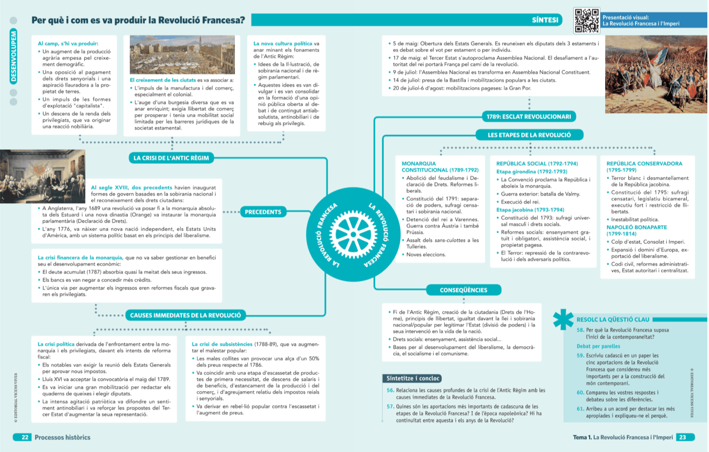

Marc cronològíc

Com treballarem? Avançarem de les estructures de l’Antic Règim a les idees, la crisi, la revolució i les seues conseqüències.
1 · El món que entra en crisi
Absolutisme, estaments i economia agrària.
2 · Idees noves
Il·lustració, sobirania, drets i separació de poders.
3 · França, 1789
Causes profundes, detonants i mobilització popular.
4 · Revolució i Imperi
Etapes, conflictes, avanços i contradiccions.
Presentació visual annexa
Observa la síntesi. No intentes memoritzar-la completa: localitza primer les tres zones —causes, procés i conseqüències— i formula una pregunta sobre cada zona.

Material visual de suport.
Seqüència orientativa de sessions
- Antic Règim: radiografia d’una societat desigual.
- Il·lustració i precedents atlàntics.
- Causes de la Revolució Francesa.
- 1789: l’esclat revolucionari.
- Monarquia constitucional.
- República, guerra i Terror.
- Directori, Consolat i Imperi.
- Laboratori de fonts i exclusions.
- Producte final i defensa breu.
- Síntesi, prova i autoavaluació.
Fil conductor d’anàlisi
En cada etapa diferencia quatre nivells: causes estructurals, detonants, actors socials i conseqüències. Aquesta pauta evita convertir la Revolució en una simple successió de dates.
En cada etapa diferencia quatre nivells: causes estructurals, detonants, actors socials i conseqüències. Aquesta pauta evita convertir la Revolució en una simple successió de dates.
Conceptes indispensables
Antic Règim, societat estamental, privilegi, sobirania nacional, constitució, sufragi, liberalisme i ciutadania.
Escales d’estudi
França, Europa i l’Atlàntic: independència americana, revolució a Haití, guerres revolucionàries i expansió napoleònica.
Problema històric
La Revolució fou alhora política, social, cultural i internacional. Quina dimensió provocà la ruptura més profunda?